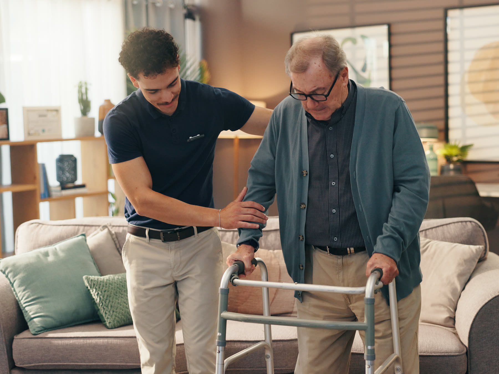
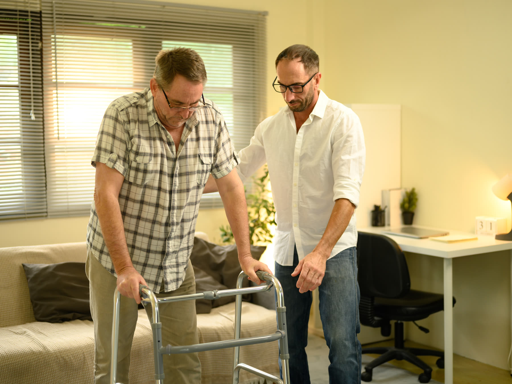

24-Stunden-Pflege zuhause in Amberg und der Oberpfalz
Wir vermitteln Betreuungskräfte, die bei Ihren Angehörigen einziehen. Persönlich begleitet von uns, einer Familie aus Ammerthal.
- Familienbetrieb aus AmmerthalElena, Alexandra und Ralf Fanderl
- Beratung bei Ihnen zuhauseim Umkreis von ca. 50 km um Amberg
- In 5 bis 10 Tagen vor Ortoder zu Ihrem Wunschtermin



Wenn es zuhause allein nicht mehr geht
Eine 24-Stunden-Betreuung hilft, damit Ihre Angehörigen in ihrem Zuhause bleiben können.
Nach dem Krankenhaus
Die Entlassung steht bevor, aber allein klappt der Alltag noch nicht.
Bei Demenz
Ihre Mutter oder Ihr Vater braucht Orientierung und jemanden, der rund um die Uhr da ist.
Wenn Ihre Kraft nicht mehr reicht
Sie pflegen selbst und merken, dass es so nicht weitergehen kann.
Was Ihre Betreuungskraft übernimmt
Sie lebt mit im Haushalt und ist da, bei den kleinen Handgriffen genauso wie in schwierigen Momenten.
Im Alltag
- Haushalt und Wäsche
- Mahlzeiten zubereiten
- Einkäufe und Besorgungen
- Spaziergänge und Begleitung
- Eine feste Tagesstruktur
In der Betreuung
- Grundpflege, z. B. Waschen und Anziehen
- Hilfe beim Toilettengang
- Betreuung bei Demenz
- Auch bei höherem Pflegegrad
- Gesellschaft und Gespräche
Kurzzeitbetreuung zuhause
Auch für ein paar Wochen, zum Beispiel acht Wochen nach einer OP, als Auszeit für pflegende Angehörige oder bis ein Heimplatz frei wird.
Rückruf anfordernMedizinische Behandlungspflege wie Spritzen oder Wundversorgung übernimmt weiterhin Ihr ambulanter Pflegedienst.
So einfach geht es los
Vom ersten Anruf bis zur Anreise begleiten wir Sie persönlich.
Sie rufen uns an
Erzählen Sie uns kurz, worum es geht. Kostenlos und unverbindlich.
Wir kommen zu Ihnen nach Hause
Wir lernen Ihre Angehörigen kennen und besprechen in Ruhe, was gebraucht wird.
Die Betreuungskraft zieht ein
In 5 bis 10 Tagen oder zu Ihrem Wunschtermin. Wir bleiben die ganze Zeit Ihr Ansprechpartner.
Was Familien uns zuerst fragen
- Ist das legal?
- Ja. Unsere Betreuungskräfte kommen überwiegend aus Polen und arbeiten über feste Partneragenturen mit A1-Bescheinigung. Sie sind in ihrem Heimatland sozialversichert.
- Spricht die Betreuungskraft Deutsch?
- Ihre Wünsche zu Deutschkenntnissen, Führerschein oder Nichtraucher berücksichtigen wir bei der Auswahl.
- Und wenn es menschlich nicht passt?
- Dann tauschen wir die Betreuungskraft auf Ihren Wunsch zeitnah aus.
Wir sind Herzweg24
Ein Familienbetrieb, entstanden aus eigener Erfahrung.
Als in unserer Familie Pflege nötig wurde, haben wir erlebt, wie viele Fragen offen bleiben und wie schwer gute Hilfe zu finden ist. Deshalb haben wir Herzweg24 gegründet.
Alexandra bringt über acht Jahre Erfahrung aus der Pflege mit, Elena ist Sozialpädagogin. Gemeinsam mit Ralf sind wir Ihre festen Ansprechpartner, auch über die Bürozeiten hinaus.
Was kostet 24-Stunden-Pflege?
Jede Situation ist anders, deshalb gibt es keinen Pauschalpreis. Nach dem Beratungsgespräch erhalten Sie ein klares Angebot.
Gut zu wissen: Ab Pflegegrad 2 zahlt die Pflegekasse Pflegegeld. Viele Familien nutzen es, um einen Teil der Betreuung zu finanzieren.
Der Preis hängt vor allem ab von
- dem Pflegeaufwand
- den Deutschkenntnissen der Betreuungskraft
- Einsätzen in der Nacht
- einem Führerschein
- der Betreuung von zwei Personen
Für Familien in Amberg und der ganzen Oberpfalz
Zum Beratungsgespräch kommen wir im Umkreis von etwa 50 km um Amberg zu Ihnen. Betreuungskräfte vermitteln wir in ganz Deutschland.
Unter anderem in: Amberg, Ammerthal, Sulzbach-Rosenberg, Hirschau, Schwandorf, Burglengenfeld, Nabburg, Neumarkt i. d. OPf., Weiden i. d. OPf., Auerbach i. d. OPf. und Hersbruck.
Häufige Fragen zur 24-Stunden-Pflege
Ihre Frage ist nicht dabei? Rufen Sie uns einfach an.
Was bedeutet 24-Stunden-Pflege genau?
Eine Betreuungskraft wohnt mit im Haushalt Ihres Angehörigen und unterstützt im Alltag und bei der Grundpflege. Sie hat geregelte Pausen und Freizeit, ist aber im Haus und damit da, wenn sie gebraucht wird.
Wie schnell kann eine Betreuungskraft bei uns sein?
In der Regel innerhalb von 5 bis 10 Tagen nach dem Beratungsgespräch. Wenn Sie einen festen Starttermin brauchen, zum Beispiel die Entlassung aus dem Krankenhaus, planen wir darauf hin.
Was müssen wir zuhause bereitstellen?
Ein eigenes Zimmer für die Betreuungskraft, einen Internetzugang sowie die Mitbenutzung von Bad und Küche.
Wie oft wechselt die Betreuungskraft?
Üblich ist ein Wechsel alle 2 bis 3 Monate. Wir begleiten jeden Wechsel persönlich.
Übernimmt die Betreuungskraft auch Pflege?
Ja, die Grundpflege wie Waschen, Anziehen und Hilfe beim Toilettengang. Medizinische Behandlungspflege wie Spritzen oder Wundversorgung übernimmt ein ambulanter Pflegedienst.
Wo beraten Sie vor Ort?
Im Umkreis von etwa 50 km um Amberg, zum Beispiel in Sulzbach-Rosenberg, Schwandorf, Neumarkt und Weiden. Außerhalb davon vermitteln wir ebenfalls und beraten Sie telefonisch.
Sprechen wir über Ihre Situation
Kostenlos und unverbindlich. Wir hören zu und sagen Ihnen ehrlich, was möglich ist.
09628 7409897